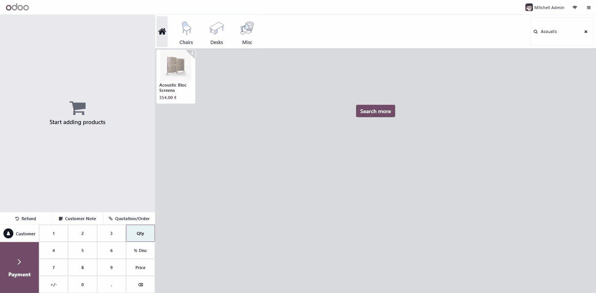
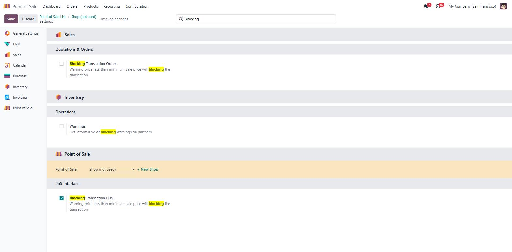
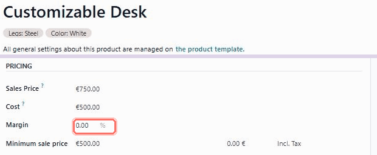
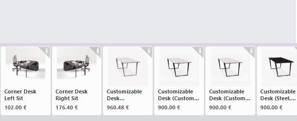
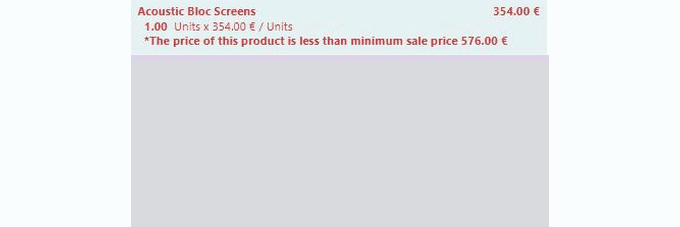
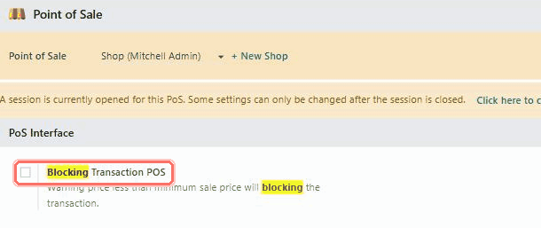
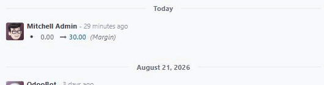

Odoo 19 · Point of Sale · Free module Odoo will happily ring up a sale below cost. This module won't.Out of the box, an Odoo till accepts any price a cashier types. POS Margin Threshold gives every product a minimum sale price — cost plus the margin you choose — then puts that floor on the screen at the till. Go under it and the line turns red and the cashier gets stopped: a warning they can override, or a hard block they cannot. Set the margin once on a product category. Every product underneath it inherits a floor. No spreadsheet, no per-product data entry, no training programme. |  One margin rule, set once on a category, enforced at every till. |
|
|
|
The problem
Margin leaks at the till, and nobody sees it until month end
Odoo shows you margin after the fact, on a report. By then the stock has walked out of the shop. These are the three ways it happens.
The goodwill discountA regular customer asks for a bit off. The cashier types a rounder, friendlier number. Nobody at the till knows what that product actually cost to buy. | The price that never movedYour supplier put costs up in March. The sales price on the product is still the one you set last year. Every sale since has been quietly thinner than you think. | The shop you cannot stand inHead office sets the policy. Enforcing it across several shops means trusting that every cashier on every shift remembers it. Most of the time they do. Most is not all. |
Set-up
Three fields, one switch, and you are done
There is no configuration wizard and no new menu to learn. The module adds fields to screens you already use, and one switch to Point of Sale settings.
 Step 1 Type a margin on a categoryOpen any product category and fill in Margin as a percentage. Every product in that category picks it up. |  Step 2 Check the floor on the productMinimum sale price now sits beside the sales price, with a tax-inclusive figure next to it. Override the margin on one product any time. |  Step 3 Decide: warn, or blockIn Point of Sale settings, leave Blocking Transaction POS off to warn the cashier, or switch it on to stop the payment outright. |
The till compares against the price the customer pays — tax included
A floor of 12.00 on a product taxed at 20% becomes 14.40 at the till. That is the number the cashier is measured against, so the rule matches the receipt instead of arguing with it.
Features
Twelve things it does, one moving picture each
Nothing on this list is a claim without a demo. If it is written here, you can watch it happen.
Feature 01 Set the margin once, on the categoryType one percentage into Margin on a product category and every product inside it inherits a price floor. A shop with two thousand SKUs and eleven categories needs eleven numbers, not two thousand. |  |
 | Feature 02 The floor follows your cost, by itselfMinimum sale price is your cost price plus the margin, and it recomputes the moment the cost moves. A supplier price rise lands once and every floor above it steps up with no reprice project. |
Feature 03 Or type the floor and let Odoo do the percentageSome products you think about as "never below 19.99", not as "cost plus 34%". Type the minimum straight into the field and the margin percentage is worked out backwards for you. The two fields stay in step whichever one you edit. |  |
 | Feature 04 A tax-inclusive floor, computed for youMinimum sale price (Tax include) takes the taxes on the product and gives you the shelf-price equivalent. It is the figure the till uses, so what the rule enforces is what the customer actually hands over. |
Feature 05 An under-priced product is red in the back office tooSet a sales price below the floor and the field turns red on the product form and in the variant grid, before anything reaches a till. Catching it at the desk is cheaper than catching it at the counter. |  |
 | Feature 06 Bulk-assign a margin to a selectionTick rows in the product list, run Update margin sale, type one percentage, press Assign. Useful for a seasonal range or a supplier's whole catalogue that does not map cleanly onto one category. |
Feature 07 Works on variants, not just templatesThe margin and minimum price fields appear on the product variants grid as well as the template form, and an under-priced variant is flagged red there too. Read the FAQ below on how margin behaves across variants of one template — there is a real limit and we would rather you heard it here. |  |
 | Feature 08 The offending line is red on the till screenIn the POS order, any line under the floor turns red and carries the message The price of this product is less than minimum sale price with the actual figure. The cashier sees the problem in the basket, not in a popup after the fact. |
Feature 09 Warn mode: the cashier is asked, not overruledWith blocking off, pressing Payment raises Price unit less than minimum price — Some products are below the minimum price. Proceed to payment? Confirm and the sale goes through. Cancel and it does not. Judgement stays with the person at the counter. |  |
 | Feature 10 Block mode: the payment screen never opensSwitch Blocking Transaction POS on and the same order raises an error instead. The payment step is refused until the price is fixed. Use this where the floor is policy rather than guidance. |
Feature 11 One switch to change the whole policyWarn and block are the same rule with a different ending, and moving between them is one checkbox in Point of Sale settings. Start soft while your team gets used to it, tighten later, with no data to migrate. |  |
 | Feature 12 Margin changes are logged in the chatterThe margin field is tracked, so every change is written into the product's message history with the author, the date, and the old and new values. When a floor turns out to be wrong, you can see who moved it and when. |
Use cases
Where a POS margin floor pays for itself
Every retailer running Odoo Point of Sale loses margin the same way — a rounded price here, a supplier hike missed there, a cashier being kind on a Saturday. POS Margin Threshold shuts all four leaks at the till, in real time, with zero training.
Protect margin on every goodwill discountIn fashion, cosmetics and accessories, one rounded-down price on a low-ticket item quietly turns a 40% margin into a 12% margin. Set a minimum sale price per product category and cashiers can still be generous — without ever slipping below cost. Every Odoo POS discount stays profitable, every basket stays on-policy, every receipt is audit-ready. POS discount limitsRetail margin control |
One pricing policy, enforced at every tillHead-office margin rules are only as strong as the weakest counter. Configure minimum margins once at the category level and every Odoo POS terminal — every shop, every shift — inherits them automatically. No syncing, no cashier training, no drift between locations. Block mode makes the floor inviolable; warn mode keeps managers in the loop. Perfect for franchisors, multi-brand retailers and pop-up networks. Franchise POSMulti-shop enforcement |
Supplier price rises absorbed automaticallyWhen raw-material, packaging or import costs jump — and in 2026 they will — repricing thousands of SKUs by hand is a losing game. Because the floor is cost + margin, not a static number, a single update in Odoo Purchase moves every affected minimum in real time. No stale prices, no forgotten SKUs, no midnight reprice spreadsheet. Your minimum keeps pace with your supplier. Dynamic pricingCost-plus margin |
Deliberate loss-leaders, always by decisionSometimes selling below cost is the right call — clearing dead stock, matching a competitor, closing a strategic account. Warn mode captures the manager's approval on the receipt so every under-cost sale is deliberate, traceable and defensible at audit. You never lose a margin by accident again — and you keep the flexibility to lose one on purpose when the business case is real. Manager approvalLoss-leader tracking |
The obvious objection
"Odoo already knows my margin. Why do I need this?"
Fair question, and the honest answer is that Odoo knows your margin perfectly well — afterwards. This module is about the moment before the sale, not the report after it.
Accepts any price the cashier types. Nothing on the till screen says what the product cost or what it must not go below. |
Every product carries a floor. The line turns red and the figure is printed on it, in the basket, before payment. |
You find the thin sale on a pivot table days or weeks later, when the stock has already gone. |
The check runs when Payment is pressed. You either hear about it now or you never lose it. |
A pricelist proposes a number. It has no opinion about a number typed over the top of it. |
Keep your pricelists exactly as they are. The floor sits underneath them and catches whatever gets through. |
"Never go below 15%" works while people remember it. New starters and busy Saturdays are where it stops working. |
One switch decides whether the rule advises or refuses. Nobody has to remember anything. |
Any approach that needs a number on every product is an approach that never gets finished. |
One percentage per category covers the catalogue in an afternoon. Override the handful of products that are genuinely special. |
Price
Free, and free in the way that matters
Published under AGPL-3. No licence key, no seat count, no phone-home, no trial that expires. The code is in the module you download and it keeps working whatever happens to us.
Free module $0 Odoo 19.0 · licence AGPL-3
| What you are never billed for
Odoo Apps Store policy requires our store price to be no higher than anywhere else we sell. It is free here and free on doodex.net, so that holds by construction. Paid work — installation on your server, changes to fit your process, migration — is quoted separately and only if you ask for it. |
9 automated tests, 0 failures | 6 languages shipped | 4 standard Odoo dependencies | 0 activation keys, ever |
Test figure from the module's own tests/ suite, which ships inside the module. Languages: Arabic, English, French, Indonesian, Portuguese, Spanish. Dependencies: base, point_of_sale, product, stock_account — all standard Odoo.
Before you install anything
Tell us how you price, and we will tell you straight
Category margins, per-customer pricelists, variants with different costs, a franchise network, promotions that deliberately dip under cost — describe what you actually do and we will say whether this module handles it. If it does not, we will say that too.
|
|
|
Scan a code with your phone camera to open the link. The address printed beside each code is the same destination typed out, so it still works if this page is copied as plain text.
Requirements
Everything you need to know before installing
| Item | Detail |
|---|---|
| Odoo edition | Odoo 19.0, Community or Enterprise. This listing is the 19.0 build. |
| Depends on | base, point_of_sale, product, stock_account. All standard Odoo modules — nothing to buy alongside. |
| Installation | Drop the folder in your addons path, update the apps list, install. No custom installer, no shell script, no post-install steps. |
| Licence | AGPL-3. Full readable source; you may modify it for your own use. |
| Activation key | None. The module never contacts a licence server and never phones home. |
| External services | None. No data leaves your database. Nothing to disclose, nothing to opt into. |
| Languages | English source plus Arabic, French, Indonesian, Portuguese and Spanish translations. |
| Where it acts | Point of Sale orders. Quotations and sale orders are the sibling module's job — Sale Margin Threshold, free on the Odoo Apps Store. |
| Demo data | None ships with the module. Set a margin on one category to try it on your own products. |
| Uninstalling | Removes the added fields and the setting. Your products, prices and POS history are untouched. |
Support
What happens after you install
Support here means defects, not a subscription. If the module does something this page says it should not, tell us and we fix it in a release.
|
|
|
FAQ
Twelve real questions, answered plainly
Does it stop the sale, or just complain about it?
Does it stop the sale, or just complain about it?
Both are available and you choose per database. With Blocking Transaction POS off — the default — pressing Payment raises a confirm dialog the cashier can accept or cancel. With it on, an error appears instead and the payment screen does not open at all.
How is the minimum price calculated?
How is the minimum price calculated?
Cost price times one plus the margin. A product with a cost of 100 and a margin of 20% gets a minimum of 120. The tax-inclusive figure the till uses then adds the product's taxes on top of that.
Do I have to set a margin on every product?
Do I have to set a margin on every product?
No, and please don't. Set it on the product category and every product inside inherits it. Override the individual products that are genuinely exceptions, and use the bulk Update margin sale action for a group that does not match a category.
Which cost does it use — the last purchase price or the average?
Which cost does it use — the last purchase price or the average?
Whatever is in the product's standard cost field, which is the figure your own costing method maintains. If you use average cost, the floor follows your average cost. The module does not impose a costing method on you.
Can margin be different for each variant of the same product?
Can margin be different for each variant of the same product?
No, and this is a real limitation we would rather you heard from us. The margin field appears on variants, but editing it on one variant writes the value onto the shared product template, so the other variants of that template follow. If your variants have genuinely different costs and need genuinely different margins, this module will not give you that today. Ask us before you rely on it.
Does it work with pricelists and discounts?
Does it work with pricelists and discounts?
Yes, and it does not interfere with them. Pricelists still decide the proposed price. The floor is a separate check that runs on whatever price ends up on the line, whether a pricelist put it there, a discount reduced it, or the cashier typed it by hand.
What about quotations and sale orders?
What about quotations and sale orders?
This module covers Point of Sale only. Its free sibling Sale Margin Threshold puts the same rule on quotation confirmation. They share the same fields, so a margin you set is used by both, and installing both does not create duplicate fields on the product form.
Is it Community or Enterprise?
Is it Community or Enterprise?
Both. It depends only on standard Odoo modules that ship in Community, so an Enterprise database works too. Nothing here duplicates an Enterprise feature.
Will this slow the till down?
Will this slow the till down?
No. The two minimum-price values are sent to the POS with the rest of the product data when the session opens, so the check at payment is arithmetic already in the browser. There is no server round-trip while the cashier is waiting.
Does anything about my prices or costs leave my server?
Does anything about my prices or costs leave my server?
Nothing. The module makes no outbound network call of any kind. There is no telemetry, no licence check and no cloud component, which is also why there is nothing for us to shut off.
Is it translated into my language?
Is it translated into my language?
English is the source, and Arabic, French, Indonesian, Portuguese and Spanish are included. If you need another language, the translation files are ordinary Odoo .po files you can extend — or tell us and we will look at adding it.
What happens if I uninstall it?
What happens if I uninstall it?
The margin and minimum-price fields and the POS setting go away. Your products, your prices, your costs and your POS order history stay exactly as they were. Nothing in your data depends on the module continuing to exist.
Works great with
Other Doodex modules, built the same way
Different problems, same approach: narrow scope, a one-time price and the limits stated up front. Each one installs on its own.
|
|
|
Releases
What has shipped, and what is next
A visible changelog is the honest answer to "will this still be maintained next year". Ours starts here.
19.0 | Current | First release for Odoo 19.0. Margin on product category, template and variant. Minimum sale price and its tax-inclusive twin, computed both directions. Red highlighting in the product form, the variant grid and the POS order line. Bulk Update margin sale action and wizard. Blocking Transaction POS setting with warn and block modes. Margin tracked in the chatter. Arabic, French, Indonesian, Portuguese and Spanish translations. 9 automated tests, shipped inside. |
Next | In progress | Margin that can genuinely differ between variants of one template — the limitation described in the FAQ. Also under review: making the bulk assign action confirm before it overwrites margins, and an optional manager approval on the warn-mode override. Tell us which of these matters most to you and it moves up. |
It is free — the only cost is ten minutes
Install it, or ask us first. Both are fine.
Download it from this page and try it on one product category. Or talk to us for half an hour and find out whether it fits before you touch your database.
|
|
|
Scan a code with your phone camera to open the link. The address printed beside each code is the same destination typed out.